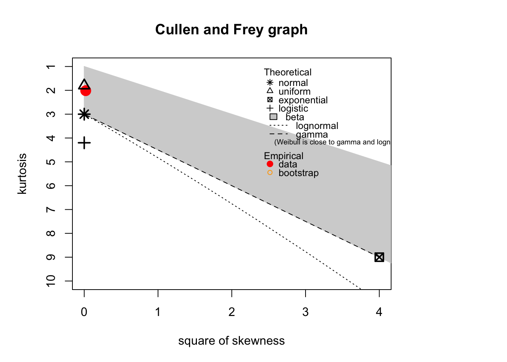
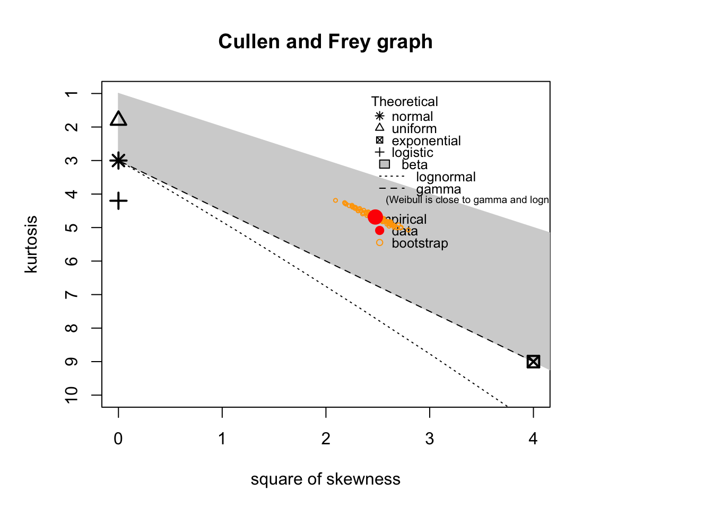
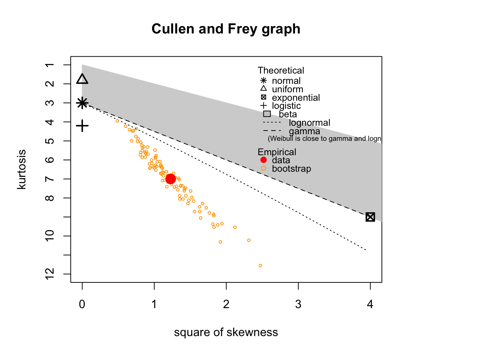
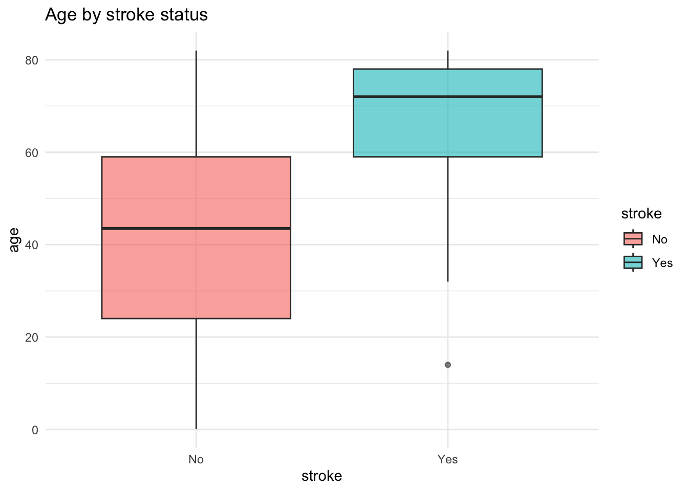
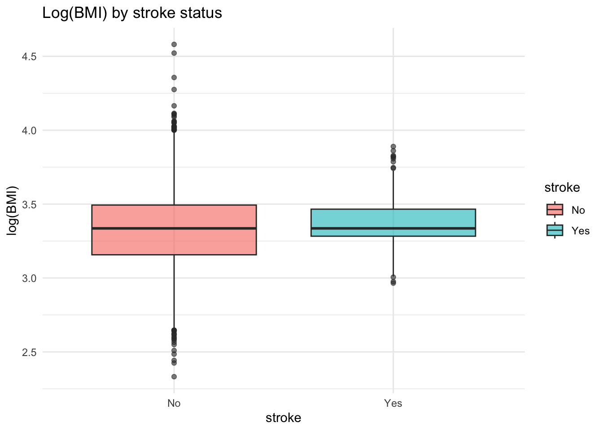
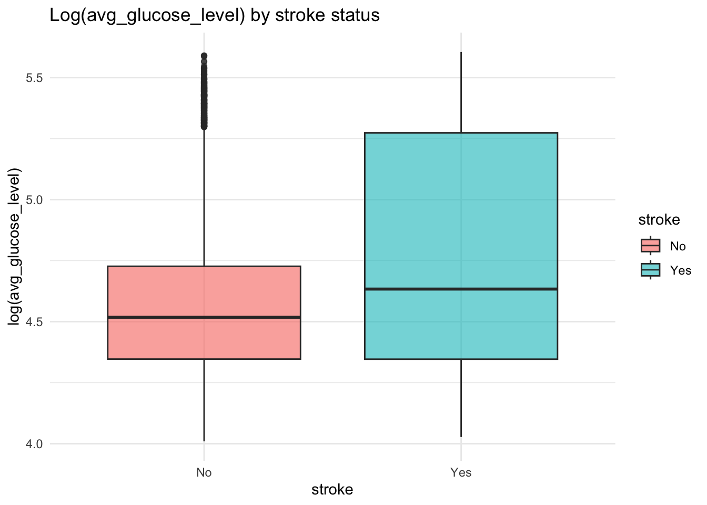

variable n_missing
id id 0
gender gender 0
age age 0
hypertension hypertension 0
heart_disease heart_disease 0
ever_married ever_married 0
work_type work_type 0
residence residence 0
avg_glucose_level avg_glucose_level 0
BMI BMI 0
smoking_status smoking_status 0
stroke stroke 0
Changes in variables
# Binary output variabledf$stroke <-factor( df$stroke,levels =c(0, 1),labels =c("No", "Yes"))# Eliminate variables not used in the modeldf <- df %>%select(-id)# Convert some variables to numericdf$BMI <-as.numeric(df$BMI)
The following object is masked from 'package:dplyr':
select
Loading required package: survival
par(mar =c(5, 5, 4, 8))vars_cf <-c("age","avg_glucose_level","BMI")for (v in vars_cf) {cat("\n\n### Variable:", v, "\n")# Cullen & Frey plotdescdist(train_df[[v]], boot =100)}
### Variable: age

### Variable: avg_glucose_level

### Variable: BMI

The Cullen and Frey analysis shows that age has a nearly symmetric distribution with moderate kurtosis, making it broadly compatible with a normal or logistic distribution. In contrast, average glucose level exhibits clear positive skewness and increased kurtosis, suggesting a right-tailed distribution such as lognormal or gamma. BMI presents even stronger right skewness and high kurtosis, indicating heavy tails and the presence of extreme values. For both glucose and BMI, the assumption of normality may not be appropriate. These findings support the use of variable transformations (e.g. logarithmic) or flexible, non-linear modeling approaches such as GAM.
The pairwise analysis shows that age, BMI, and average glucose level are positively correlated overall, although the strength of these associations is moderate. When stratified by outcome, age exhibits a clear separation between stroke and non-stroke groups, suggesting a strong discriminative role. In contrast, BMI and glucose display substantial overlap between classes. This overlap indicates limited additional predictive value beyond age, specially for BMI. Consequently, even though these variables are associated with stroke, their marginal contribution to model performance is suggested to be modest.
library(ggplot2)# Ageggplot(train_df, aes(x = stroke, y = age, fill = stroke)) +geom_boxplot(alpha =0.6) +theme_minimal() +labs(title ="Age by stroke status")

# BMI (log-transformed)ggplot(train_df, aes(x = stroke, y =log(BMI), fill = stroke)) +geom_boxplot(alpha =0.6) +theme_minimal() +labs(title ="Log(BMI) by stroke status")

# Average glucose level (log-transformed)ggplot(train_df, aes(x = stroke, y =log(avg_glucose_level), fill = stroke)) +geom_boxplot(alpha =0.6) +theme_minimal() +labs(title ="Log(avg_glucose_level) by stroke status")

The boxplots highlight a clear separation in age between individuals with and without stroke, with stroke cases being markedly older on average and showing limited overlap with the non-stroke group. In contrast, log-transformed BMI exhibits very similar medians and substantial overlap between classes, indicating weak discriminative power despite transformation. A similar pattern is observed for log-transformed average glucose level, although in this case stroke cases tend to have slightly higher values but with wide dispersion and strong overlap. These visual results suggest that age is the dominant predictor, glucose levels might contribute moderately to the model while BMI contribution is marginal. This suggests transforming BMI and glucose might not translate into improved model performance.
# Hypertensionggplot(train_df, aes(x = hypertension, fill = stroke)) +geom_bar(position ="fill") +theme_minimal() +labs(y ="Proportion", title ="Stroke proportion by hypertension")
# Heart diseaseggplot(train_df, aes(x = heart_disease, fill = stroke)) +geom_bar(position ="fill") +theme_minimal() +labs(y ="Proportion", title ="Stroke proportion by heart disease")
# Genderggplot(train_df, aes(x = gender, fill = stroke)) +geom_bar(position ="fill") +theme_minimal() +labs(y ="Proportion", title ="Stroke proportion by gender")
The plots indicate that stroke prevalence is notably higher among individuals with hypertension and those with heart disease, compared to those without these conditions, suggesting a role of these variables as clinical risk factors for stroke. In contrast, gender shows minimal differences in stroke proportion, with similar rates observed for males and females. The “Other” gender category presents no stroke cases, likely reflecting a very small sample size rather than a true absence of risk. Overall, although these categorical variables display associations with stroke at a univariate level, their discriminative power seems weaker than that of age.
1. Model construction
Model V1 (only some 2nd-order interactions, no log variables)
Call:
glm(formula = stroke ~ age + avg_glucose_level + hypertension,
family = binomial, data = train_df)
Coefficients:
Estimate Std. Error z value Pr(>|z|)
(Intercept) -7.880140 0.421063 -18.715 <2e-16 ***
age 0.076784 0.005958 12.888 <2e-16 ***
avg_glucose_level 0.003283 0.001291 2.543 0.0110 *
hypertensionYes 0.441413 0.177982 2.480 0.0131 *
---
Signif. codes: 0 '***' 0.001 '**' 0.01 '*' 0.05 '.' 0.1 ' ' 1
(Dispersion parameter for binomial family taken to be 1)
Null deviance: 1591.0 on 4086 degrees of freedom
Residual deviance: 1250.1 on 4083 degrees of freedom
AIC: 1258.1
Number of Fisher Scoring iterations: 7
Model 1 identifies age, average glucose level, and hypertension as the main predictors of stroke. As expected, age shows the strongest association, with increasing age markedly raising the odds of stroke. Average glucose level has a smaller but statistically significant positive effect, indicating higher stroke risk with increasing glucose. Hypertension is also significantly associated with stroke, with hypertensive individuals having higher odds compared to non-hypertensive ones. The substantial reduction from null deviance to residual deviance, together with a low AIC, indicates a clear improvement over the null model, although most of the explanatory power is driven by age.
Model V2 (all 2nd-order interactions, log variables)
Call:
glm(formula = stroke ~ age + hypertension + log_glucose, family = binomial,
data = train_df_v2)
Coefficients:
Estimate Std. Error z value Pr(>|z|)
(Intercept) -9.397920 0.884876 -10.621 <2e-16 ***
age 0.077150 0.005947 12.972 <2e-16 ***
hypertensionYes 0.448738 0.177782 2.524 0.0116 *
log_glucose 0.402593 0.173993 2.314 0.0207 *
---
Signif. codes: 0 '***' 0.001 '**' 0.01 '*' 0.05 '.' 0.1 ' ' 1
(Dispersion parameter for binomial family taken to be 1)
Null deviance: 1591.0 on 4086 degrees of freedom
Residual deviance: 1251.1 on 4083 degrees of freedom
AIC: 1259.1
Number of Fisher Scoring iterations: 7
Model 2 replaces raw average glucose level with its logarithmic transformation while retaining age and hypertension as predictors. Although log(glucose) is statistically significant, the overall model fit is slightly worse, as reflected by the higher AIC (1259.1 vs. 1258.1) and marginally higher residual deviance. This indicates that the log transformation of glucose does not improve explanatory power relative to the original scale. Overall, Model 1 is therefore preferred on model selection criteria, despite both models yielding very similar inference.
Model V3 (all 2nd-order interactions, no log variables)
Call:
glm(formula = stroke ~ age + avg_glucose_level + hypertension,
family = binomial, data = train_df)
Coefficients:
Estimate Std. Error z value Pr(>|z|)
(Intercept) -7.880140 0.421063 -18.715 <2e-16 ***
age 0.076784 0.005958 12.888 <2e-16 ***
avg_glucose_level 0.003283 0.001291 2.543 0.0110 *
hypertensionYes 0.441413 0.177982 2.480 0.0131 *
---
Signif. codes: 0 '***' 0.001 '**' 0.01 '*' 0.05 '.' 0.1 ' ' 1
(Dispersion parameter for binomial family taken to be 1)
Null deviance: 1591.0 on 4086 degrees of freedom
Residual deviance: 1250.1 on 4083 degrees of freedom
AIC: 1258.1
Number of Fisher Scoring iterations: 7
Model 3, which allowed all second-order interactions in the applied stepwise selection, converged to the same final model as Model 1, retaining age, average glucose level, and hypertension as predictors. No interaction terms were selected, indicating that pairwise interactions between variables do not provide additional explanatory value beyond main effects. Model fit metrics (residual deviance and AIC) are identical to those of Model 1, confirming that an increased model complexity does not improve performance. This suggests that the relationship between these predictors and stroke risk is largely additive and dominated by age.
2. Test and evaluation metrics
# Test and stroke prediction (P(stroke = "Yes"))test_prob <-predict(model_step_v3, newdata = test_df, type ="response")test_df$pred_prob <- test_prob# ROC + AUC library(pROC)
Type 'citation("pROC")' for a citation.
Attaching package: 'pROC'
The following objects are masked from 'package:stats':
cov, smooth, var
# Save modelsaveRDS(model_step_v3, file ="model_v3.rds")
On the test set, the model shows good discriminative ability, with an AUC of 0.80 (95% CI: 0.75–0.85), clearly outperforming the null model (AUC = 0.50; ΔAUC ≈ 0.30). Using a low cutoff (0.1) yields high specificity (≈0.86) but only moderate sensitivity (≈0.48), whereas the Youden-optimal threshold (~0.04) substantially increases sensitivity to 0.82 at the cost of reduced specificity (≈0.69). This trade-off is appropriate for a screening context, where minimizing false negatives is prioritized over false positives. Overall, the model provides a robust balance between discrimination and sensitivity, supporting its use as a screening tool for identifying individuals at higher stroke risk rather than for definitive diagnosis.
Model calibration (for screening)
library(rms)
Loading required package: Hmisc
Attaching package: 'Hmisc'
The following objects are masked from 'package:dplyr':
src, summarize
The following objects are masked from 'package:base':
format.pval, units
The model is good at ranking people from lower to higher stroke risk, but it is less accurate at predicting the exact probability of having a stroke. It tends to overestimate risk, especially for people it classifies as high risk. On average, however, the prediction errors are small, and the model performs well in the low-risk range, where most individuals lie. This makes the model appropriate for screening, where the goal is to identify higher-risk individuals, but not ideal for giving precise individual risk percentages without further recalibration.
3. Alternative approaches
LASSO
library(glmnet)
Loading required package: Matrix
Attaching package: 'Matrix'
The following objects are masked from 'package:tidyr':
expand, pack, unpack
# Save modelsaveRDS(lasso_model, file ="lasso_model.rds")
The LASSO model shows virtually the same performance as the initial stepwise logistic model, with an AUC of 0.80 vs 0.799, indicating equivalent discrimination. Sensitivity and specificity are also very similar at both the fixed cutoff and the Youden-optimal threshold. The key advantage of LASSO is that it yields a simpler, more stable model by removing less relevant variables while maintaining the same predictive ability, making it equally suitable for screening.
GAM
# GAM (logistic)library(mgcv)
Loading required package: nlme
Attaching package: 'nlme'
The following object is masked from 'package:dplyr':
collapse
This is mgcv 1.9-3. For overview type 'help("mgcv-package")'.
# Save modelsaveRDS(gam_model, file ="gam_model.rds")
The GAM also performs very similarly to the initial logistic model. Discrimination is unchanged, with an AUC of about 0.80 and overlapping confidence intervals. At a fixed cutoff of 0.1, sensitivity (~0.48) and specificity (~0.85) are almost identical, while the Youden-optimal cutoff increases sensitivity (~0.82) at the cost of lower specificity (~0.69), reflecting the same trade-off as before. The main advantage of the GAM is interpretability, revealing non-linear effects of age and average glucose level, but it does not improve overall predictive performance.